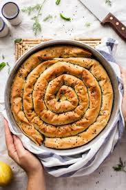

Spanakopita

Description
Spanakopita is a savory Greek pastry made with layers of flaky phyllo dough filled with a mixture of spinach,
feta cheese, onions or leeks, and fresh herbs.
The dish is baked until golden and crispy, and it's commonly served as an appetizer, snack, or side dish. It's rich,
flavorful, and perfect for both casual meals and special occasions.
Ingredients
- Spinach
- Feta Cheese
- Phyllo Dough
- Onion or Leeks
- Fresh Herbs (like dill and parsley)
Steps
- Preheat oven to 350°F (175°C).
- Prepare the filling:
Sauté chopped onions or leeks in olive oil until soft.
Add spinach and cook until wilted (or use thawed frozen spinach, well-drained).
Mix the spinach mixture with crumbled feta and chopped herbs.
Season with salt and pepper to taste.
- Layer the phyllo:
Brush a baking dish with olive oil or butter.
Layer 6–8 sheets of phyllo, brushing each with oil or melted butter as you go.
Add the spinach-feta mixture evenly over the phyllo base.
Top with another 6–8 layers of phyllo, again brushing between each sheet.
- Cut through the top layers of phyllo to create squares or diamond shapes for easier serving.
- Bake for 45–60 minutes, or until the top is golden and crisp.
- Let cool slightly before serving.